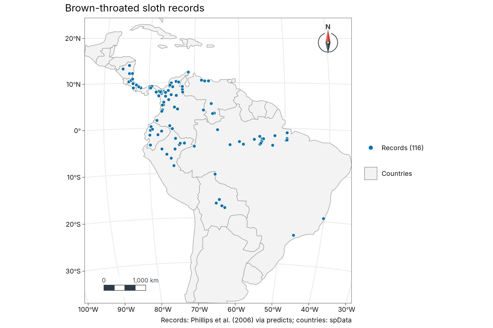
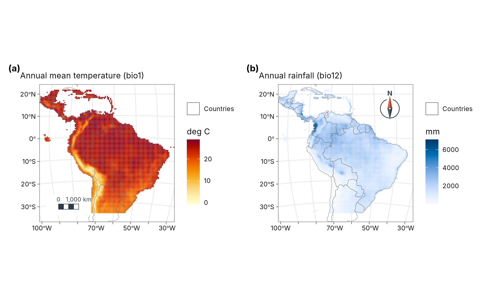
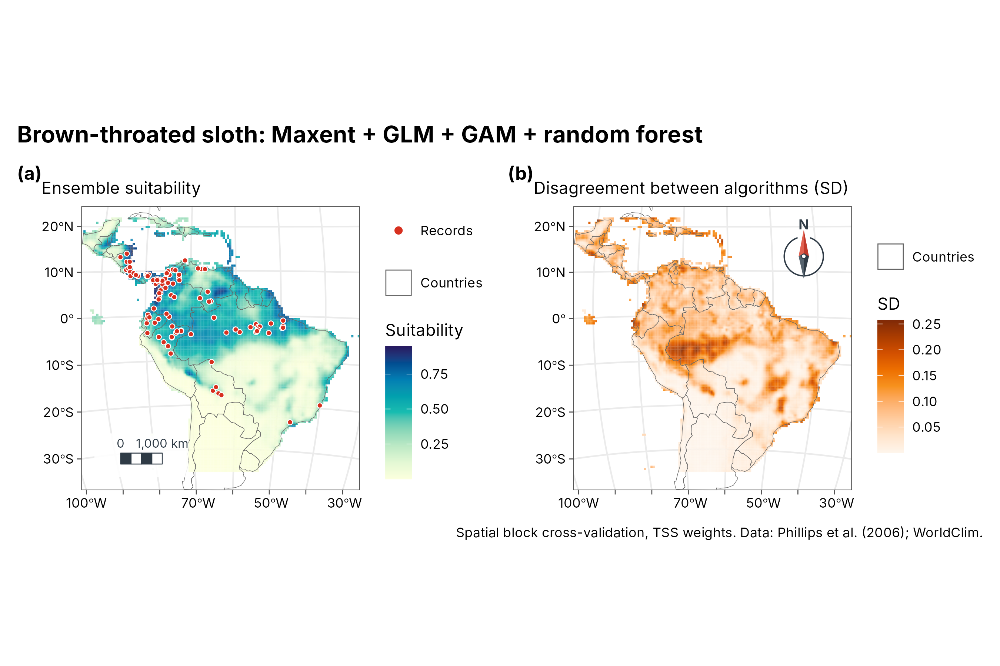
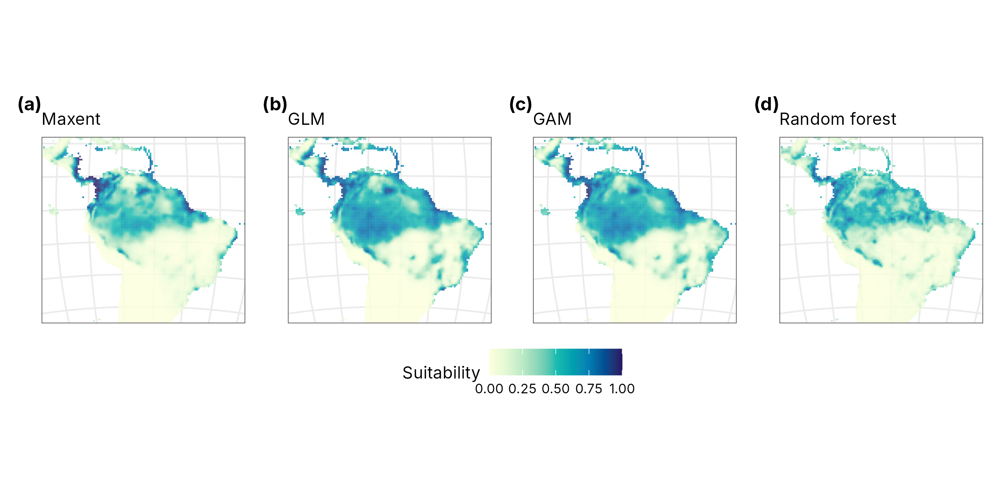

Case study: where does the brown-throated sloth live?
case-sloth-sdm.RmdThe brown-throated sloth, Bradypus variegatus, lives in the lowland forests of Central and South America. This case study maps its range from 116 published records and WorldClim climate, the data of the original Maxent paper (Phillips, Anderson and Schapire 2006, shipped with the predicts package). It fits Maxent and three other algorithms, scores them on regions they have not seen, and turns the result into publication maps and an interactive map.
Data
occ <- read.csv(system.file("ex/bradypus.csv", package = "predicts"))
presences <- sf::st_as_sf(occ, coords = c("lon", "lat"), crs = 4326)
climate <- terra::rast(system.file("ex/bio.tif", package = "predicts"))
climate <- climate[[c("bio1", "bio5", "bio6", "bio7", "bio8", "bio12", "bio16", "bio17")]]
# The study region: southern Mexico to southern Brazil
region <- c(xmin = -95, ymin = -35, xmax = -32, ymax = 22)
climate <- terra::crop(climate, terra::ext(region[c(1, 3, 2, 4)]))
climate
#> class : SpatRaster
#> size : 114, 126, 8 (nrow, ncol, nlyr)
#> resolution : 0.5, 0.5 (x, y)
#> extent : -95, -32, -35, 22 (xmin, xmax, ymin, ymax)
#> coord. ref. : lon/lat WGS 84 (EPSG:4326)
#> source(s) : memory
#> varname : bio
#> names : bio1, bio5, bio6, bio7, bio8, bio12, ...
#> min values : -23, 97, -136, 62, -66, 0, ...
#> max values : 289, 364, 240, 336, 290, 7682, ...
world <- sf::st_read(system.file("shapes/world.gpkg", package = "spData"), quiet = TRUE)
americas <- suppressWarnings(sf::st_crop(world, region))The records
A map of the records over the countries, in a Lambert equal-area projection centred on the data.
geo_map(
title = "Brown-throated sloth records", crs = "laea",
caption = "Records: Phillips et al. (2006) via predicts; countries: spData"
) |>
map_polygons(americas, fill = "grey95", border = "grey55", label = "Countries") |>
map_points(presences, preset = "occurrence", label = "Records (116)")
Climate
Annual mean temperature (bio1, tenths of a degree) and
annual rainfall (bio12, mm), side by side.
temp <- geo_map(subtitle = "Annual mean temperature (bio1)", crs = "laea", north_arrow = FALSE) |>
map_raster(climate[["bio1"]] / 10, name = "deg C", palette = "YlOrRd") |>
map_polygons(americas, fill = NA, border = "grey40", linewidth = 0.15, label = "Countries")
rain <- geo_map(subtitle = "Annual rainfall (bio12)", crs = "laea", scale_bar = FALSE) |>
map_raster(climate[["bio12"]], name = "mm", palette = "Blues 3") |>
map_polygons(americas, fill = NA, border = "grey40", linewidth = 0.15, label = "Countries")
geo_panels(temp, rain, ncol = 2, guides = "keep")
Presences and background
Maxent compares the climate at the records with the climate available in the region, sampled at 10,000 random background points.
set.seed(1)
bg <- suppressWarnings(terra::spatSample(climate, 10000, "random", na.rm = TRUE, xy = TRUE))
pv <- terra::extract(climate, occ[, c("lon", "lat")], ID = FALSE)
d <- rbind(pv, bg[names(climate)])
xy <- rbind(as.matrix(occ[, c("lon", "lat")]), as.matrix(bg[, c("x", "y")]))
presence <- c(rep(1, nrow(pv)), rep(0, nrow(bg)))
ok <- stats::complete.cases(d)
d <- d[ok, ]
xy <- xy[ok, ]
presence <- presence[ok]
table(presence)
#> presence
#> 0 1
#> 6240 116Maxent
sdm_maxent() fits Maxent in C++ with the features and
regularisation of maxnet. Unlike maxnet, it rescales the predictors to
0-1 first, so the result does not depend on the units of the climate
layers.
mx <- sdm_maxent(presence, d)
mx
#> Maxent (lqph features, regmult 1): 116 presences, 6240 background points,
#> standardised predictors, 28 non-zero features of 820.
#> Features kept: linear 6, quadratic 3, product 5, hinge 14.An ensemble, tested on new regions
sdm_ensemble() adds a GLM, a GAM and a random forest.
Each is scored with spatial block cross-validation (the test points are
whole regions it has not seen) and weighted by its true skill
statistic.
ens <- sdm_ensemble(presence, d, coords = xy, folds = 5, ntree = 500)
ens
#> SDM ensemble of 4 algorithms: 116 presences, 6240 background points, 5
#> spatial-block folds.
#> # A tibble: 4 × 5
#> algorithm auc tss boyce weight
#> <chr> <dbl> <dbl> <dbl> <dbl>
#> 1 maxent 0.779 0.532 0.307 0.241
#> 2 glm 0.769 0.507 0.499 0.215
#> 3 gam 0.784 0.529 0.589 0.238
#> 4 rf 0.804 0.595 0.629 0.306
suit <- predict(ens, climate, what = "all")
suit
#> class : SpatRaster
#> size : 114, 126, 6 (nrow, ncol, nlyr)
#> resolution : 0.5, 0.5 (x, y)
#> extent : -95, -32, -35, 22 (xmin, xmax, ymin, ymax)
#> coord. ref. : lon/lat WGS 84 (EPSG:4326)
#> source(s) : memory
#> names : maxent, glm, gam, rf, mean, sd
#> min values : 0.000001, 0, 0, 0, 0.000001, 0.000002
#> max values : 1, 0.973653, 0.986726, 0.995219, 0.962976, 0.309864Suitability and disagreement
a <- geo_map(subtitle = "Ensemble suitability", crs = "laea", north_arrow = FALSE) |>
map_raster(suit[["mean"]], name = "Suitability", palette = "YlGnBu") |>
map_polygons(americas, fill = NA, border = "grey40", linewidth = 0.15, label = "Countries") |>
map_points(presences, preset = "sample_site", label = "Records", size = 1.3)
b <- geo_map(subtitle = "Disagreement between algorithms (SD)", crs = "laea", scale_bar = FALSE) |>
map_raster(suit[["sd"]], name = "SD", palette = "Oranges") |>
map_polygons(americas, fill = NA, border = "grey40", linewidth = 0.15, label = "Countries")
geo_panels(a, b,
ncol = 2, guides = "keep",
title = "Brown-throated sloth: Maxent + GLM + GAM + random forest",
caption = "Spatial block cross-validation, TSS weights. Data: Phillips et al. (2006); WorldClim."
)
How to read the disagreement map. The four algorithms (Maxent, GLM, GAM and random forest) each predict a suitability between 0 and 1. The ensemble map shows their weighted average; the disagreement map shows their weighted standard deviation, that is, how far apart their predictions are at each place. Near 0 (pale), all four agree, so the ensemble value can be trusted there. Higher values (dark orange, here up to about 0.25) mean the algorithms give clearly different answers, often where the climate differs from anywhere the sloth was recorded. Treat the suitability in those places as uncertain and check it with field data.
Each algorithm
All four on the same 0-1 scale, so one colour means the same suitability in every panel, with one shared legend.
names <- c(maxent = "Maxent", glm = "GLM", gam = "GAM", rf = "Random forest")
maps <- lapply(names(names), function(a) {
geo_map(subtitle = names[[a]], crs = "laea", scale_bar = FALSE, north_arrow = FALSE) |>
map_raster(suit[[a]], name = "Suitability", palette = "YlGnBu", limits = c(0, 1)) |>
map_build() +
ggplot2::theme(axis.text = ggplot2::element_blank(), axis.ticks = ggplot2::element_blank())
})
geo_panels(maps, ncol = 4, guides = "collect", legend_position = "bottom")
Interactive map
The suitability surface and the records as one HTML page, with basemaps, pop-ups and the same legend.
web <- geo_map(title = "Brown-throated sloth habitat suitability") |>
map_raster(suit[["mean"]], name = "Suitability", palette = "YlGnBu", alpha = 0.75) |>
map_points(presences, preset = "sample_site", label = "Records")
dir.create("case-sloth-sdm_files", showWarnings = FALSE)
geo_webmap(web, file = "case-sloth-sdm_files/sloth-webmap.html")